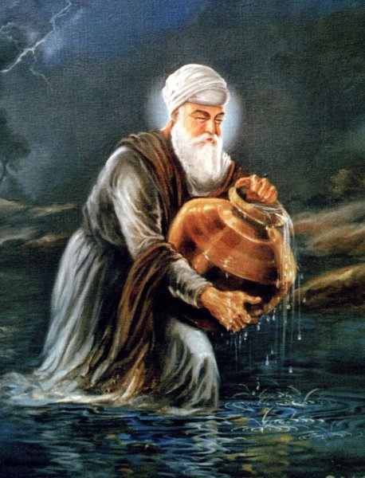

| |
|
 |
The Third Guru - Guru Amar Das ji (1552 to 1574)
Name : Amar Das Ji Parents : Tej Bhan & Mata Bakht Born : March 23, 1479 Siblings :--N.A-- Spouse : Mata Mansa Devi Children : Sons - Bhai Mohan and Bhai Mohri, Daughters - Bibi Dani Ji and Bibi Bhani Ji Guruship : 1552 to 1574 Joti Jot :Thursday 16 September 1574 Age :95 years Bani :907 hymns, Anand Sahib |

Guru Amardas Sahib, the Third Nanak was born at village Basarke Gillan in Amritsar district on Vaisakh Sudi 14th, (8th Jeth), Samvat 1536 (5th May 1479). (Some chronicles mention the month of April 1479). His father Tej Bhan Bhalla and mother Bakht Kaur (also reffered as Sulakhani and Lakhmi Devi) were orhtodox Hindus and used to pay annual visits to the Ganges river at Haridwar. Guru Amardas Sahib was married to Mata Mansa Devi ji and had four childern: two daughters; Bibi Dani ji and Bibi Bhani ji (she was married to Guru Ramdass Sahib), and two sons; Mohan ji and Mohri ji. Once Guru Amardas Sahib heard some hyms of Guru Nanak Sahib from Bibi Amro Ji, the daughter of Guru Angad Sahib. He became too much impressed and immediately went to see Guru Angad Sahib at Khadur Sahib. Under the impact of the teachings of Guru Angad Sahib, Guru Amardas Sahib adopted him as his spiritual guide (Guru). Then he started living at Khadur Sahib. He used to rise early in the morning, bring water from the Bias River for Guru's bath and fetch wood from the Jungle for 'Guru ka Langar'. Guru Angad Sahib appointed Guru Amardas Sahib as third Nanak in March 1552 at the age of 73. This was a result of his services and devotion to Guru Angad Sahib and his teachings. He established his headquarters at newly built town Goindwal. There he propagated the Sikh faith in a very planned manner. He divided the Sikh Sangat area into 22 preaching centres. (Manjis), each under the charge of a devout Sikh. He himself visited and sent Sikh missionaries to different parts of India to spread Sikhism. He strengthened the tradition of 'Guru ka Langer' and made it compulsory for the visitor to the Guru saying that 'Pehle Pangat Phir Sangat'. Once the emperor Akbar came to see Guru Sahib and he had to eat the coarse rice in the Langar before he could have an interview with Guru Sahib. He was too much impressed from this system and expressed his desire to grant some royal property for 'Guru ka Langar', but Guru Sahib declined it with respect. Guru Amardas Sahib persuaded Akbar to waive off toll-tax (pilgrim's tax) for non-Muslims while crossing Yamuna and Ganga, Akbar did so. Guru Amardas Sahib maintained cordial relations with emperor Akbar. He preached against Sati and advocated widow-remarriage. He asked the women to discard 'Purdah' (veil). He introduced new birth, marriage and death ceremonies. Thus he created a fence around the infant like Sikhism and there upon met stiff resistance from the Orthodox Hindus and Muslim fundamentalists. He fixed three Gurpurbs for Sikh celebrations: Dewali, Vaisakhi and Maghi. Visiting of Hindu pilgrimage centres and paying tributes to the Muslim places were prohibited. Guru Amardas Sahib constructed Baoli at Goindwal Sahib having eighty-four steps and made it a Sikh pilgrimage centre for the first time in the history of Sikhism. He reproduced more copies of the hymns of Guru Nanak Sahib and Guru Angad Sahib. He also composed 869 (according to some chronicles these were 709) verses (stanzas) including Anand Sahib, and Guru Arjan Sahib made all the Shabads part of Guru Granth Sahib. Guru Amardas Sahib did not consider anyone of his sons fit for Guruship and chose instead his son-in law (Guru) Ramdas Sahib to succeed him. Certainly it was practically a right step not as emotional, because Bibi Bhani ji and Guru Ramdas Sahib had true sprit of service and their keen understanding of the Sikh principles deserved this. This practice shows that Guruship could be transferred to any body fit for the Sikh cause and not to the particular person who belonged to the same family or of other. Guru Amardas Sahib at the ripe age of 95 passed away for heaven on Bhadon Sudi 14th, (1st Assu) Samvat 1631, (September 1, 1574) at Goindwal Sahib near District Amritsar, after giving responsibility of Guruship to the Fourth Nanak, Guru Ramdas Sahib. | |
{kind=link}